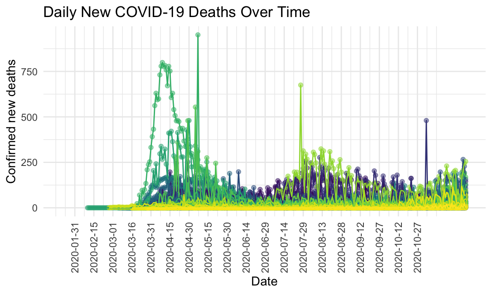
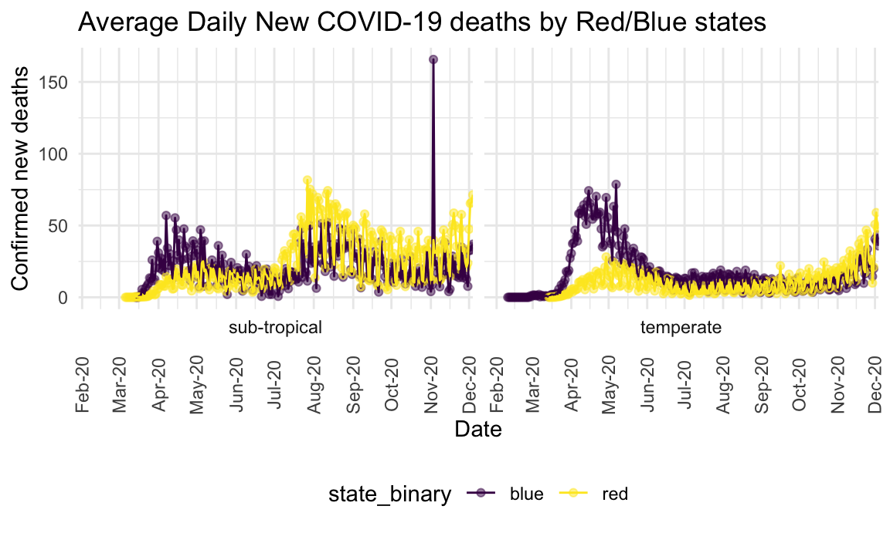
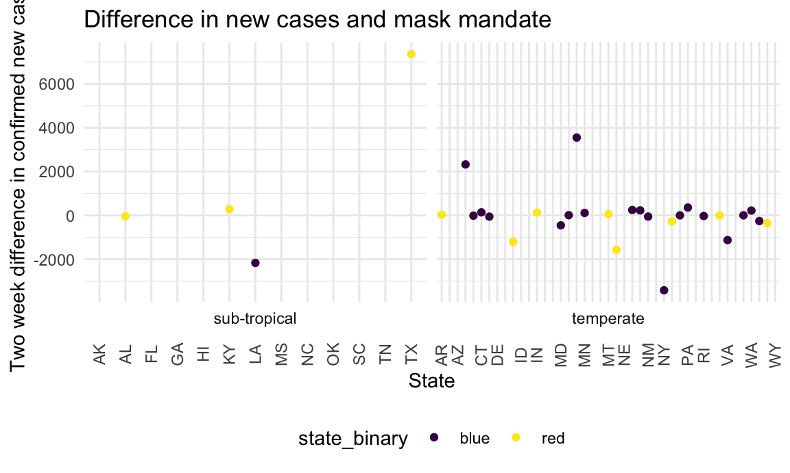
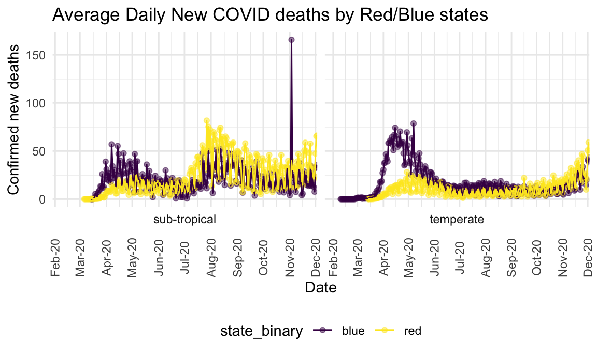
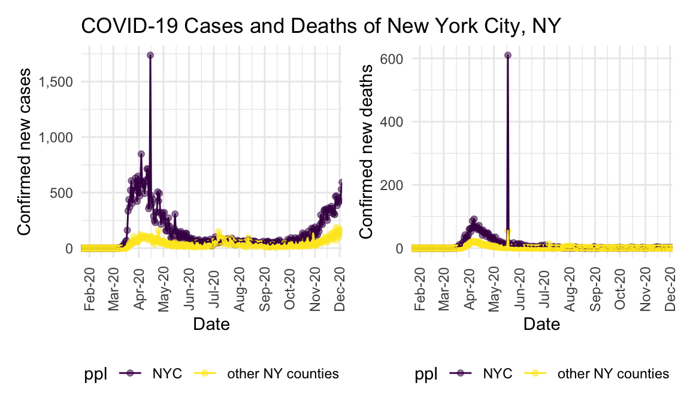
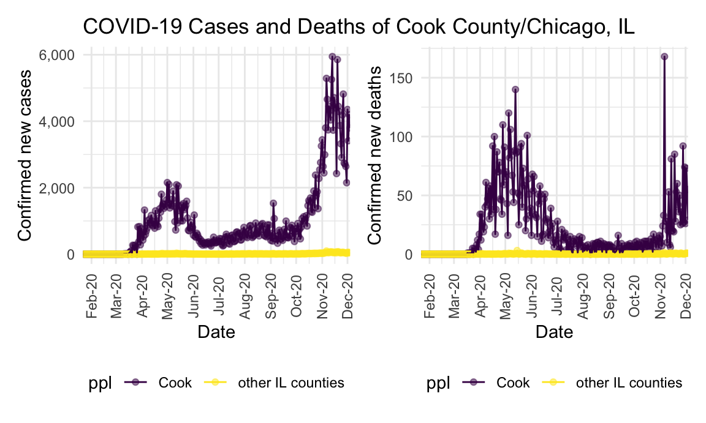
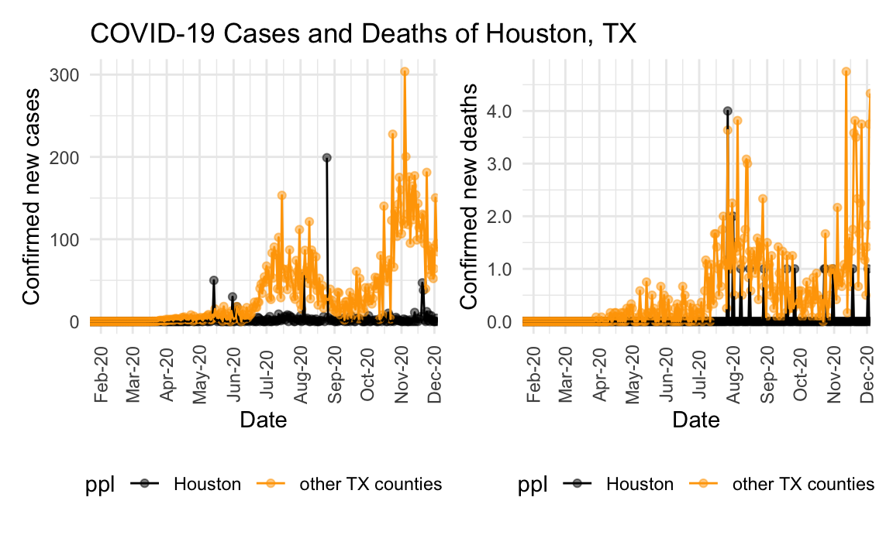
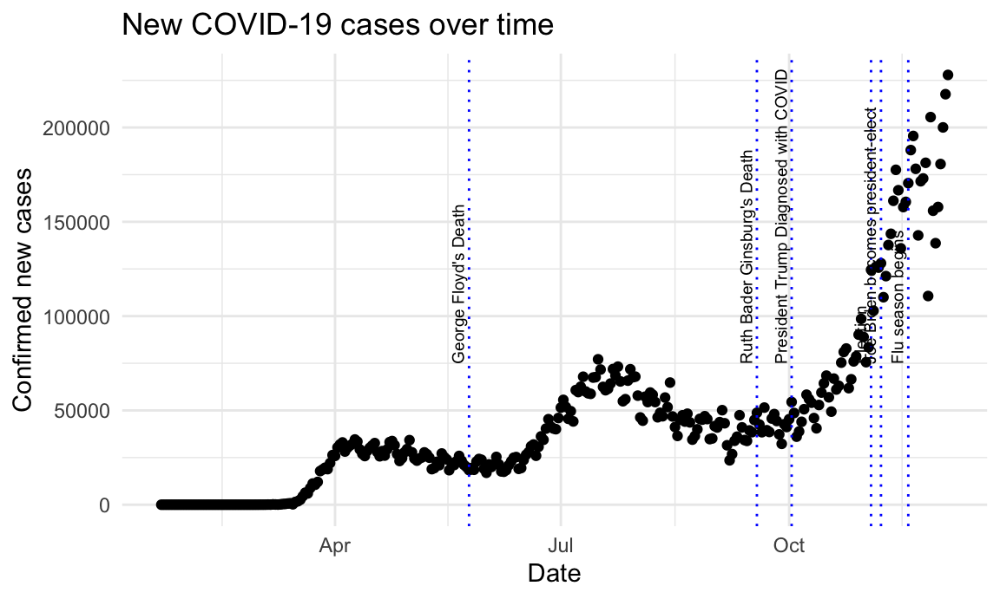
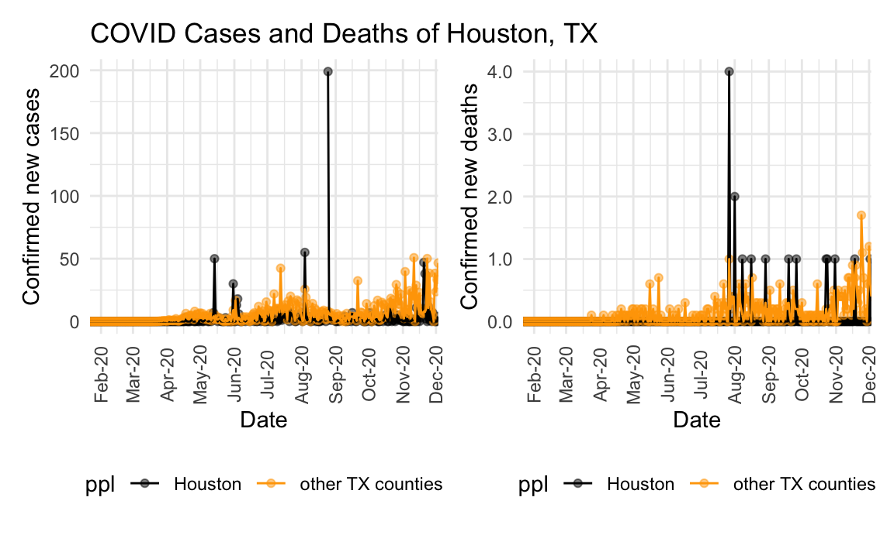
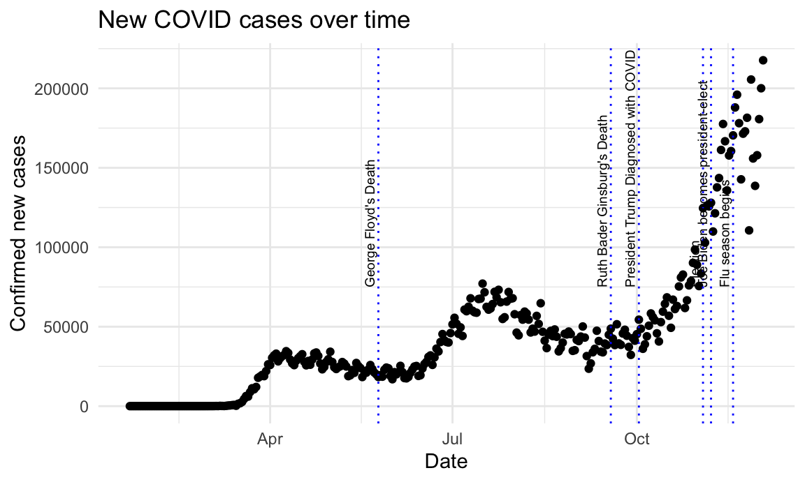

descriptive_plots
Ling Yi & Lunbei Hu
12/2/2020
library(tidyverse)## ── Attaching packages ─────────────────────────────────────── tidyverse 1.3.0 ──## ✓ ggplot2 3.3.2 ✓ purrr 0.3.4
## ✓ tibble 3.0.3 ✓ dplyr 1.0.2
## ✓ tidyr 1.1.2 ✓ stringr 1.4.0
## ✓ readr 1.3.1 ✓ forcats 0.5.0## ── Conflicts ────────────────────────────────────────── tidyverse_conflicts() ──
## x dplyr::filter() masks stats::filter()
## x dplyr::lag() masks stats::lag()library(plotly)##
## Attaching package: 'plotly'## The following object is masked from 'package:ggplot2':
##
## last_plot## The following object is masked from 'package:stats':
##
## filter## The following object is masked from 'package:graphics':
##
## layoutlibrary(flexdashboard)
library(readxl)
require(scales)## Loading required package: scales##
## Attaching package: 'scales'## The following object is masked from 'package:purrr':
##
## discard## The following object is masked from 'package:readr':
##
## col_factorlibrary(lubridate)##
## Attaching package: 'lubridate'## The following objects are masked from 'package:base':
##
## date, intersect, setdiff, unionlibrary(httr)##
## Attaching package: 'httr'## The following object is masked from 'package:plotly':
##
## configlibrary(patchwork)
library(COVID19)
knitr::opts_chunk$set(
fig.width = 6,
fig.asp = .6,
out.width = "90%"
)
theme_set(theme_minimal() + theme(legend.position = "bottom"))
options(
ggplot2.continuous.colour = "viridis",
ggplot2.continuous.fill = "viridis"
)
scale_colour_discrete = scale_colour_viridis_d
scale_fill_discrete = scale_fill_viridis_dImporting relevent dataset which includes the data from the COVID19 R package and a locally made dataset with dates of mask mandate per state.
covid_df = covid19(c("US"), level = 2, start = "2020-01-01")## We have invested a lot of time and effort in creating COVID-19 Data Hub, please cite the following when using it:
##
## Guidotti, E., Ardia, D., (2020), "COVID-19 Data Hub", Journal of Open
## Source Software 5(51):2376, doi: 10.21105/joss.02376.
##
## A BibTeX entry for LaTeX users is
##
## @Article{,
## title = {COVID-19 Data Hub},
## year = {2020},
## doi = {10.21105/joss.02376},
## author = {Emanuele Guidotti and David Ardia},
## journal = {Journal of Open Source Software},
## volume = {5},
## number = {51},
## pages = {2376},
## }
##
## To retrieve citation and metadata of the data sources see ?covid19cite. To hide this message use 'verbose = FALSE'.covid_df =
covid_df %>%
mutate(
state = key_alpha_2
) %>%
arrange(state) %>%
group_by(state) %>%
mutate(
new_case = confirmed - lag(confirmed, default = 0),
new_case_updated = replace(new_case, which(new_case < 0), NA),
new_deaths = deaths - lag(deaths, default = 0),
new_death_updated = replace(new_deaths, which(new_deaths < 0), NA),
date = as.Date(date),
new_date = date,
state_binary = ifelse(state %in% c("ID", "MT", "ND", "WY", "SD", "UT", "NE", "IA", "KS", "MO", "OK", "AR", "TX", "IL", "MS", "AL", "FL", "TN", "KY", "IN", "OH", "WV", "NC", "SC", "AK"), "red", "blue"),
temperate = ifelse(state %in% c("FL", "TX", "NC", "SC", "GA", "LA", "HI", "OK", "AK", "AL", "MS", "TN", "KY"), "sub-tropical", "temperate")
) %>%
separate(new_date, into = c("year", "month", "day"))
mask_df = read_excel("./data/mask_state.xlsx") %>%
janitor::clean_names() %>%
mutate(date = as.Date(as.numeric(as.character(date)), origin = "1899-12-30")) %>%
dplyr::select(-x4)## New names:
## * `` -> ...4cactus_df = left_join(covid_df, mask_df, by.x = c("state", "date"), by.y = c("state", "date"))## Joining, by = c("date", "state")Making the first plot: Look at trends of new COVID cases by state over the past yearI.
time_plot =
covid_df %>%
ggplot(aes(x = date, y = new_case_updated, color = state)) +
geom_point(alpha = 0.5) +
geom_line() +
theme(legend.position = "none") +
labs(title = "Daily New Covid Cases Over Time",
y = "Confirmed new cases",
x = "Date") +
scale_x_date(breaks = seq.Date(from = as.Date("2020-01-31"),
to = as.Date("2020-11-01"), by = 15)) +
theme(axis.text.x = element_text(angle = 90, vjust = 0.5, hjust = 0.5))
time_plot <- time_plot + scale_y_continuous(labels = comma)time_plot## Warning: Removed 185 rows containing missing values (geom_point).## Warning: Removed 162 row(s) containing missing values (geom_path).
Making the first plot: Look at trends of new COVID deaths by state over the past yearI.
death_plot =
covid_df %>%
ggplot(aes(x = date, y = new_death_updated, color = state)) +
geom_point(alpha = 0.5) +
geom_line() +
theme(legend.position = "none") +
labs(title = "Daily New Covid Deaths Over Time",
y = "Confirmed new deaths",
x = "Date") +
scale_x_date(breaks = seq.Date(from = as.Date("2020-01-31"),
to = as.Date("2020-11-01"), by = 15)) +
theme(axis.text.x = element_text(angle = 90, vjust = 0.5, hjust = 0.5))
death_plot <- death_plot + scale_y_continuous(labels = comma)death_plot## Warning: Removed 930 rows containing missing values (geom_point).## Warning: Removed 861 row(s) containing missing values (geom_path).
Daily new COVID case of red/blue state (based on 2020 presidential election) stratified by temperate/sub-tropical state
state_plot =
covid_df %>%
group_by(state_binary, date, temperate) %>%
summarize(mean_cases = mean(new_case_updated, na.rm = TRUE)) %>%
ggplot(aes(x = date, y = mean_cases, color = state_binary)) +
geom_point(alpha = 0.5) +
geom_line() +
scale_y_continuous(labels = comma) +
facet_wrap(~temperate, nrow = 1, scales = "free_x", shrink = FALSE, strip.position = "bottom") +
labs(title = "Average Daily New COVID cases by Red/Blue states",
y = "Confirmed new cases",
x = "Date") +
scale_x_date(date_breaks = "1 month", date_labels = "%b-%y",expand = c(0,0)) +
theme(axis.text.x = element_text(angle = 90, vjust = 0.5, hjust = 0.5))## `summarise()` regrouping output by 'state_binary', 'date' (override with `.groups` argument)state_plot## Warning: Removed 18 rows containing missing values (geom_point).
Daily new COVID deaths of red/blue state (based on 2020 presidential election) stratified by temperate/sub-tropical state
state_death =
covid_df %>%
group_by(state_binary, date, temperate) %>%
summarize(mean_deaths = mean(new_death_updated, na.rm = TRUE)) %>%
ggplot(aes(x = date, y = mean_deaths, color = state_binary)) +
geom_point(alpha = 0.5) +
geom_line() +
scale_y_continuous(labels = comma) +
facet_wrap(~temperate, nrow = 1, scales = "free_x", shrink = FALSE, strip.position = "bottom") +
labs(title = "Average Daily New COVID deaths by Red/Blue states",
y = "Confirmed new deaths",
x = "Date") +
scale_x_date(date_breaks = "1 month", date_labels = "%b-%y",expand = c(0,0)) +
theme(axis.text.x = element_text(angle = 90, vjust = 0.5, hjust = 0.5))## `summarise()` regrouping output by 'state_binary', 'date' (override with `.groups` argument)state_death## Warning: Removed 94 rows containing missing values (geom_point).## Warning: Removed 47 row(s) containing missing values (geom_path).
#creating new variables to look at two week difference in new COVID cases and COVID deaths two weeks to one month after mask mandate respectively.
cactus_df =
cactus_df %>%
mutate(in_two_weeks_mask = if_else(mask == "Yes", lead(new_case_updated, 14), NA_real_)) %>%
mutate(diff = in_two_weeks_mask - new_case_updated)
cactus_df =
cactus_df %>%
mutate(in_two_weeks_death = if_else(mask == "Yes", lead(new_death_updated, 30), NA_real_)) %>%
mutate(diff_death = in_two_weeks_death - new_death_updated)Observing two week difference in confirmed new COVID cases from date of mask mandate in states that enforced a mandate
cactus_df %>%
ggplot(aes(x = state, y = diff, color = state_binary)) +
geom_point() +
theme(axis.text.x = element_text(angle = 90, vjust = 0.5, hjust = 0.5)) +
facet_wrap(~temperate, nrow = 1, scales = "free_x", shrink = TRUE, strip.position = "bottom") +
scale_x_discrete(guide = guide_axis(check.overlap = TRUE)) +##not sure if I will use this
labs(title = "Difference in new cases and mask mandate",
y = "Two week difference in confirmed new cases",
x = "State")
Observing two week difference in confirmed new COVID deaths from date of mask mandate in states that enforced a mandate
cactus_df %>%
ggplot(aes(x = state, y = diff_death, color = state_binary)) +
geom_point() +
theme(axis.text.x = element_text(angle = 90, vjust = 0.5, hjust = 0.5)) +
facet_wrap(~temperate, nrow = 1, scales = "free_x", shrink = TRUE, strip.position = "bottom") +
scale_x_discrete(guide = guide_axis(check.overlap = TRUE)) +##not sure if I will use this
labs(title = "Difference in new deaths and mask mandate",
y = "Four week difference in confirmed new deaths",
x = "State")In comparison of new COVID cases and deaths between main US cities (New York City, Los Angeles, Chicago/Cook County and Houston) and less populated countiesII
confirmed_df =
read_csv("https://github.com/CSSEGISandData/COVID-19/raw/master/csse_covid_19_data/csse_covid_19_time_series/time_series_covid19_confirmed_US.csv") %>%
select_all(tolower) %>%
mutate(
state = province_state,
county = admin2
) %>%
select(-c(uid:combined_key)) %>%
select(state, county, everything()) %>%
filter(state %in% c("New York", "California", "Illinois", "Texas")) %>%
pivot_longer(
-c(state, county),
names_to = "date",
values_to = "case_total"
) %>%
group_by(state, county) %>%
mutate(
date = mdy(date),
new_case = case_total - lag(case_total, default = 0),
new_case_updated = replace(new_case, which(new_case < 0), NA)
)## Parsed with column specification:
## cols(
## .default = col_double(),
## iso2 = col_character(),
## iso3 = col_character(),
## Admin2 = col_character(),
## Province_State = col_character(),
## Country_Region = col_character(),
## Combined_Key = col_character()
## )## See spec(...) for full column specifications.deaths_df = read_csv("https://github.com/CSSEGISandData/COVID-19/raw/master/csse_covid_19_data/csse_covid_19_time_series/time_series_covid19_deaths_US.csv") %>%
select_all(tolower) %>%
mutate(
state = province_state,
county = admin2
) %>%
select(-c(uid:combined_key)) %>%
select(state, county, everything()) %>%
filter(state %in% c("New York", "California", "Illinois", "Texas")) %>%
pivot_longer(
-c(state, county, population),
names_to = "date",
values_to = "death_total"
) %>%
group_by(state, county) %>%
mutate(
date = mdy(date),
new_death = death_total - lag(death_total, default = 0),
new_death_updated = replace(new_death, which(new_death < 0), NA)
)## Parsed with column specification:
## cols(
## .default = col_double(),
## iso2 = col_character(),
## iso3 = col_character(),
## Admin2 = col_character(),
## Province_State = col_character(),
## Country_Region = col_character(),
## Combined_Key = col_character()
## )
## See spec(...) for full column specifications.confirmed_deaths_df =
inner_join(confirmed_df, deaths_df, by = c("state", "county", "date")) %>%
group_by(state, county)
lessppl_list =
confirmed_deaths_df %>%
select(state, county) %>%
group_by(state) %>%
filter(!county %in% c("New York", "Los Angeles", "Cook", "Houston")) %>%
distinct(county, .keep_all = T) %>%
sample_n(10)
lessppl_df =
inner_join(lessppl_list, confirmed_deaths_df, by = "county") %>%
mutate(
state = state.x
) %>%
select(-c(state.x, state.y)) %>%
select(state, everything())The most populated city - New York City vs. other less populated counties in New York state regarding new COVID cases and deathsII.
nyc_df =
confirmed_deaths_df %>%
filter(county == "New York")
ny_lessppl_df =
lessppl_df %>%
filter(state == "New York")
ny_df =
nyc_df %>%
rbind(ny_lessppl_df) %>%
mutate(ppl = ifelse(county == "New York", "NYC", "other NY counties"))NYC has a population of 1628706, and the mean population of the 10 randomly selected NY counties is 271662.6.
ny_confirmed_plot =
ny_df %>%
group_by(ppl, date) %>%
summarize(mean_cases = mean(new_case_updated, na.rm = TRUE)) %>%
ggplot(aes(x = date, y = mean_cases, color = ppl)) +
geom_point(alpha = 0.5) +
geom_line() +
scale_y_continuous(labels = comma) +
labs(title = "COVID Cases and Deaths of New York City, NY",
y = "Confirmed new cases",
x = "Date") +
scale_x_date(date_breaks = "1 month", date_labels = "%b-%y",expand = c(0,0)) +
theme(axis.text.x = element_text(angle = 90, vjust = 0.5, hjust = 0.5))## `summarise()` regrouping output by 'ppl' (override with `.groups` argument)ny_deaths_plot =
ny_df %>%
group_by(ppl, date) %>%
summarize(mean_deaths = mean(new_death_updated, na.rm = TRUE)) %>%
ggplot(aes(x = date, y = mean_deaths, color = ppl)) +
geom_point(alpha = 0.5) +
geom_line() +
scale_y_continuous(labels = comma) +
labs(y = "Confirmed new deaths",
x = "Date") +
scale_x_date(date_breaks = "1 month", date_labels = "%b-%y",expand = c(0,0)) +
theme(axis.text.x = element_text(angle = 90, vjust = 0.5, hjust = 0.5))## `summarise()` regrouping output by 'ppl' (override with `.groups` argument)ny_confirmed_plot + ny_deaths_plot
The second populated city - Los Angeles vs. other less populated counties in California regarding new COVID cases and deathsII.
la_df =
confirmed_deaths_df %>%
filter(county == "Los Angeles")
ca_lessppl_df =
lessppl_df %>%
filter(state == "California")
ca_df =
la_df %>%
rbind(ca_lessppl_df) %>%
mutate(ppl = ifelse(county == "Los Angeles", "LA", "other CA counties"))Los Angeles has a population of 10039107, and the mean population of the 10 randomly selected CA counties is 207461.7.
ca_confirmed_plot =
ca_df %>%
group_by(ppl, date) %>%
summarize(mean_cases = mean(new_case_updated, na.rm = TRUE)) %>%
ggplot(aes(x = date, y = mean_cases, color = ppl)) +
geom_point(alpha = 0.5) +
geom_line() +
scale_y_continuous(labels = comma) +
labs(title = "COVID Cases and Deaths of Los Angeles, CA",
y = "Confirmed new cases",
x = "Date") +
scale_x_date(date_breaks = "1 month", date_labels = "%b-%y",expand = c(0,0)) +
theme(axis.text.x = element_text(angle = 90, vjust = 0.5, hjust = 0.5))## `summarise()` regrouping output by 'ppl' (override with `.groups` argument)ca_deaths_plot =
ca_df %>%
group_by(ppl, date) %>%
summarize(mean_deaths = mean(new_death_updated, na.rm = TRUE)) %>%
ggplot(aes(x = date, y = mean_deaths, color = ppl)) +
geom_point(alpha = 0.5) +
geom_line() +
scale_y_continuous(labels = comma) +
labs(y = "Confirmed new deaths",
x = "Date") +
scale_x_date(date_breaks = "1 month", date_labels = "%b-%y",expand = c(0,0)) +
theme(axis.text.x = element_text(angle = 90, vjust = 0.5, hjust = 0.5))## `summarise()` regrouping output by 'ppl' (override with `.groups` argument)ca_confirmed_plot + ca_deaths_plot
The third populated city - Chicago (part of Cook County) vs. other less populated counties in Illinois regarding new COVID cases and deathsII.
chicago_df =
confirmed_deaths_df %>%
filter(county == "Cook")
il_lessppl_df =
lessppl_df %>%
filter(state == "Illinois")
il_df =
chicago_df %>%
rbind(il_lessppl_df) %>%
mutate(ppl = ifelse(county == "Cook", "Cook County (Chicago)", "other IL counties"))Cook County (Chicago included) has a population of 5150233, and the mean population of the 10 randomly selected IL counties is 165878.3.
il_confirmed_plot =
il_df %>%
group_by(ppl, date) %>%
summarize(mean_cases = mean(new_case_updated, na.rm = TRUE)) %>%
ggplot(aes(x = date, y = mean_cases, color = ppl)) +
geom_point(alpha = 0.5) +
geom_line() +
scale_y_continuous(labels = comma) +
labs(title = "COVID Cases and Deaths of Cook County/Chicago, IL",
y = "Confirmed new cases",
x = "Date") +
scale_x_date(date_breaks = "1 month", date_labels = "%b-%y",expand = c(0,0)) +
theme(axis.text.x = element_text(angle = 90, vjust = 0.5, hjust = 0.5))## `summarise()` regrouping output by 'ppl' (override with `.groups` argument)il_deaths_plot =
il_df %>%
group_by(ppl, date) %>%
summarize(mean_deaths = mean(new_death_updated, na.rm = TRUE)) %>%
ggplot(aes(x = date, y = mean_deaths, color = ppl)) +
geom_point(alpha = 0.5) +
geom_line() +
scale_y_continuous(labels = comma) +
labs(y = "Confirmed new deaths",
x = "Date") +
scale_x_date(date_breaks = "1 month", date_labels = "%b-%y",expand = c(0,0)) +
theme(axis.text.x = element_text(angle = 90, vjust = 0.5, hjust = 0.5))## `summarise()` regrouping output by 'ppl' (override with `.groups` argument)il_confirmed_plot + il_deaths_plot
The fourth populated city - Houston vs. other less populated counties in Texas regarding new COVID cases and deathsII.
houston_df =
confirmed_deaths_df %>%
filter(county == "Houston")
tx_lessppl_df =
lessppl_df %>%
filter(state == "Texas")
tx_df =
houston_df %>%
rbind(tx_lessppl_df) %>%
mutate(ppl = ifelse(county == "Houston", "Houston", "other TX counties"))Houston has a population of 22968, and the mean population of the 10 randomly selected TX counties is 41614.7.
tx_confirmed_plot =
tx_df %>%
group_by(ppl, date) %>%
summarize(mean_cases = mean(new_case_updated, na.rm = TRUE)) %>%
ggplot(aes(x = date, y = mean_cases, color = ppl)) +
geom_point(alpha = 0.5) +
geom_line() +
scale_color_manual(values = c("Houston" = "black", "other TX counties" = "orange")) +
scale_y_continuous(labels = comma) +
labs(title = "COVID Cases and Deaths of Houston, TX",
y = "Confirmed new cases",
x = "Date") +
scale_x_date(date_breaks = "1 month", date_labels = "%b-%y",expand = c(0,0)) +
theme(axis.text.x = element_text(angle = 90, vjust = 0.5, hjust = 0.5)) ## `summarise()` regrouping output by 'ppl' (override with `.groups` argument)tx_deaths_plot =
tx_df %>%
group_by(ppl, date) %>%
summarize(mean_deaths = mean(new_death_updated, na.rm = TRUE)) %>%
ggplot(aes(x = date, y = mean_deaths, color = ppl)) +
geom_point(alpha = 0.5) +
geom_line() +
scale_color_manual(values = c("Houston" = "black", "other TX counties" = "orange")) +
scale_y_continuous(labels = comma) +
labs(y = "Confirmed new deaths",
x = "Date") +
scale_x_date(date_breaks = "1 month", date_labels = "%b-%y",expand = c(0,0)) +
theme(axis.text.x = element_text(angle = 90, vjust = 0.5, hjust = 0.5))## `summarise()` regrouping output by 'ppl' (override with `.groups` argument)tx_confirmed_plot + tx_deaths_plot
Texas is one of the sub-tropical states compared to NY, CA and IL (temperate), and it is marked by different colors.
Comparing overall US new COVID cases and deaths with important national events
library(sars2pack)## Loading required package: R0## Loading required package: MASS##
## Attaching package: 'MASS'## The following object is masked from 'package:patchwork':
##
## area## The following object is masked from 'package:plotly':
##
## select## The following object is masked from 'package:dplyr':
##
## select## Loading required package: sf## Linking to GEOS 3.8.1, GDAL 3.1.1, PROJ 6.3.1## Registered S3 method overwritten by 'quantmod':
## method from
## as.zoo.data.frame zoous_df = jhu_data() %>%
janitor::clean_names() %>%
filter(country_region == "US")
us_covid_df =
us_df %>%
pivot_wider(names_from = subset,
values_from = count) %>%
mutate(
new_case = confirmed - lag(confirmed, default = 0),
new_deaths = deaths - lag(deaths, default = 0),
date = as.Date(date)
)
events_df =
read_excel("./data/national_events.xlsx")
us_events_df = left_join(us_covid_df, events_df, by.x = c("date"), by.y = c( "date"))## Joining, by = "date"us_events_df =
us_events_df %>%
mutate(in_two_weeks_mask = if_else(!(is.na(event)), lead(new_case, 14), NA_real_)) %>%
mutate(diff = in_two_weeks_mask - new_case)
us_events_df =
us_events_df %>%
mutate(in_two_weeks_death = if_else(!(is.na(event)), lead(new_deaths, 30), NA_real_)) %>%
mutate(diff_death = in_two_weeks_death - new_deaths)Daily new COVID cases over the past year with important national eventsIII
us_events_df %>%
ggplot(aes(x = date, y = new_case)) +
geom_point() +
labs(title = "New COVID cases over time",
y = "Confirmed new cases",
x = "Date") +
geom_vline(data = events_df, mapping = aes(xintercept = date) ,linetype = "dotted",color = "blue", show.legend = TRUE) +
geom_text(data = events_df, mapping = aes(x = date, y = 75000, label = event), size = 2.5, angle = 90, vjust = -0.4, hjust = 0)
Daily new COVID deaths over the past year with important national eventsIII
us_events_df %>%
ggplot(aes(x = date, y = new_deaths)) +
geom_point() +
labs(title = "New COVID deaths over time",
y = "Confirmed new deaths",
x = "Date") +
geom_vline(data = events_df, mapping = aes(xintercept = date) , linetype = "dotted", color = "blue", show.legend = TRUE) +
geom_text(data = events_df, mapping = aes(x = date, y = 1000, label = event), size = 2.5, angle = 90, vjust = -0.4, hjust = 0)